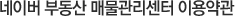

부동산 매물 등록 서비스의 이용과 관련하여 필요한 사항을 규정합니다.
부동산 (중개업소)매물등록 서비스 이용약관
제 1 조 (목적)
이 약관은 엔에이치엔비즈니스플랫폼주식회사(이하 "회사")가 제공하는 네이버부동산(http://land.naver.com/) 내에서 부동산 중개업소가 매물을 등록함에 있어 “회사”와 중개업소의 권리, 의무 및 책임사항, 기타 필요한 사항을 규정함을 목적으로 합니다.
제 2 조 (정의)
이 약관에서 사용하는 용어의 정의는 다음과 같습니다.
- 1. “서비스”라 함은 구현되는 단말기(PC, TV, 휴대형단말기 등의 각종 유무선 장치를 포함)와 상관없이 누구나 이용할 수 있는 네이버부동산 및 네이버부동산 관련 제반 서비스를 말합니다.
- 2. “회원”이라 함은 네이버 단체아이디 가입자로서 이 약관에 따라 “회사”와 이용계약을 체결하고 “서비스”를 통해 매물정보를 등록관리 하는 중개업소를 말합니다.
- 3. “매물등록상품”라 함은 “회원”이 전송한 매물정보를 “회사”가 “서비스”를 통해 일반 이용자에게 노출하는 서비스를 말하며 세부 상품유형은 다음과 같습니다.
- ① 프리미엄상품
- ② 포커스상품
- ③ 일반상품
- ④ 구동프리미엄상품
- 4. “매물관리센터”라 함은 “회원”이 자신이 원하는 “매물등록상품”을 구매하고, 매물정보의 등록, 변경 등 관리조치를 편리하게 수행할 수 있도록 “회사”가 제공하는 웹 페이지를 말합니다.
- 5. “충전금”이라 함은 “매물등록상품” 중 포커스, 일반, 구동프리미엄 상품을 이용하는데 사용할 수 있는 인터넷상 현금등가의 결제수단을 의미합니다. “충전금”은 환불이 가능한 유상충전금과 환불이 불가능한 무상충전금으로 구분됩니다.
- 6. “환급수수료”는 “회원”이 제공한 매물정보의 진위 여부 확인 등을 위해 등기부등본 열람 및 콜센터 운영 등 “회사”가 직접 투입한 실질비용으로 자세한 내용은 “매물관리센터” 및 “매물등록상품” 결제시에 확인할 수 있습니다.
제 3 조 (약관의 게시와 개정)
- 1. "회사"는 이 약관의 내용을 "회원"이 쉽게 알 수 있도록 “서비스” 내 또는 연결화면을 통하여 온라인으로 게시합니다.
- 2. "회사"는 "약관의규제에관한법률", "정보통신망이용촉진및정보보호등에관한법률(이하 "정보통신망법")" 등 관련법을 위배하지 않는 범위에서 이 약관을 개정할 수 있습니다.
- 3. "회사"가 약관을 개정할 경우에는 적용일자 및 개정사유를 명시하여 현행약관과 함께 제1항의 방식에 따라 그 개정약관의 적용일자 7일 전부터 적용일자 전일까지 공지합니다. 다만, “회원”의 권리, 의무에 중대한 영향을 주는 변경인 경우에는 적용일자 30일 전부터 공지하도록 합니다.
제 4 조 (운영정책)
“회사”는 “서비스” 운영을 위해 별도의 운영정책을 마련하여 운영할 수 있으며, “회사”는 “매물관리센터”를 통해 운영정책을 사전 공지 후 적용합니다.
제 5 조 (약관의 해석)
이 약관에서 정하지 아니한 사항이나 해석에 대해서는 별도의 운영정책, 관계법령 또는 상관례에 따릅니다.
제 6 조 (“회원”의 가입)
- 1. “회원”의 가입은 “회원”이 되고자 하는 중개업소(이하 “가입신청자”라고 합니다)가 약관의 내용에 대하여 동의를 한 다음 “회원” 가입신청을 하고, “회사”는 이러한 신청에 대하여 “가입신청자”로부터 중개업소 등록 여부를 확인할 수 있는 별도의 서면 등을 요청하여 확인 후 승낙함으로써 체결됩니다.
- 2. “회사”는 “가입신청자”가 다음 각 호에 해당하는 신청에 대하여는 승낙을 하지 않을 수 있습니다.
- ① “가입신청자”가 네이버 단체아이디 가입자가 아닌 경우
- ② 관련 법령에 따라 유효하게 등록된 부동산중개사무소가 아닌 경우
- ③ “가입신청자”가 이 약관에 의하여 이전에 “회원”자격을 상실한 적이 있는 경우. 다만, “회원”자격 상실 후 1년이 경과한 자로서 "회사"의 “회원” 재가입 승낙을 얻은 경우에는 예외로 함
- ④ 실명이 아니거나 다른 사업자 명의를 이용한 경우
- ⑤ 허위의 정보를 기재하거나, "회사"가 제시하는 내용을 기재하지 않은 경우
- ⑥ “가입신청자”의 귀책사유로 인하여 승인이 불가능하거나 기타 규정한 제반 사항을 위반하며 신청하는 경우
- 3. "회사"는 “서비스” 관련설비의 여유가 없거나, 기술상 또는 업무상 문제가 있는 경우에는 승낙을 유보할 수 있습니다.
- 4. 본 조 제2항과 제3항에 따라 “회원”가입신청의 승낙을 하지 아니하거나 유보한 경우, "회사"는 원칙적으로 이를 가입신청자에게 알리도록 합니다.
- 5. 이용계약의 성립 시기는 "회사"가 가입완료를 신청절차 상에서 표시한 시점으로 합니다.
제 7 조 (“회원”의 아이디 및 비밀번호의 관리에 대한 의무)
- 1. “회원” 아이디와 비밀번호에 관한 관리책임은 "회원"에게 있으며, 이를 제3자가 이용하도록 하여서는 안 됩니다
- 2. "회사"는 "회원"의 아이디가 개인정보 유출 우려가 있거나, 반사회적 또는 미풍양속에 어긋나거나 "회사" 및 "회사"의 운영자로 오인한 우려가 있는 경우, 해당 아이디의 이용을 제한할 수 있습니다.
- 3. "회원"은 아이디 및 비밀번호가 도용되거나 제3자가 사용하고 있음을 인지한 경우에는 이를 즉시 "회사"에 통지하고 "회사"의 안내에 따라야 합니다.
- 4. 제3항의 경우에 해당 "회원"이 "회사"에 그 사실을 통지하지 않거나, 통지한 경우에도 "회사"의 안내에 따르지 않아 발생한 불이익에 대하여 "회사"는 책임지지 않습니다.
제 8 조 (“회사”의 의무)
- 1. “회사”는 관련법과 이 약관이 금지하거나 미풍미풍양속에 반하는 행위를 하지 않으며, 계속적이고 안정적으로 "서비스" 및 “매물등록상품”을 제공하기 위하여 최선의 노력을 합니다.
- 2. “회사"는 "회원"이 안전하게 “서비스” 및 "매물등록상품"을 이용할 수 있도록 개인정보(신용정보 포함)보호를 위해 보안시스템을 갖추어야 하며 개인정보취급방침을 공시하고 준수합니다.
- 3. "회사"는 “서비스” 및 “매물등록상품” 이용과 관련하여 "회원"으로부터 제기된 의견이나 불만이 정당하다고 인정할 경우에는 이를 처리하여야 합니다. "회원"이 제기한 의견이나 불만사항에 대해서는 게시판을 활용하거나 전자우편 등을 통하여 "회원"에게 처리과정 및 결과를 전달합니다.
제 9 조 (“회원”의 의무)
- 1. “회원”은 다음 행위를 하여서는 안 됩니다.
- ① 신청 또는 변경 시 허위내용의 등록
- ② 허위 매물정보의 등록·변경
- ③ 타인의 정보도용
- ④ "회사"가 게시한 정보의 변경
- ⑤ "회사"가 정한 정보 이외의 정보(컴퓨터 프로그램 등) 등의 송신 또는 게시
- ⑥ "회사"와 기타 제3자의 저작권 등 지적재산권에 대한 침해
- ⑦ "회사" 및 기타 제3자의 명예를 손상시키거나 업무를 방해하는 행위
- ⑧ 외설 또는 폭력적인 메시지, 화상, 음성, 기타 공서양속에 반하는 정보를 "서비스"에 공개 또는 게시하는 행위
- ⑨ 기타 불법적이거나 부당한 행위
- 2. “회원”은 관계법, 이 약관 및 운영정책 규정, 이용안내 및 "서비스"와 관련하여 공지한 주의사항, "회사"가 통지하는 사항 등을 준수하여야 하며, 기타 "회사"의 업무에 방해되는 행위를 하여서는 안 됩니다.
- 3. “회원”은 관련법령에 따라 의뢰인으로부터 개인정보 수집ㆍ이용 및 제3자 제공 등에 대해 동의를 얻은 개인정보만을 매물정보에 입력하여야 한다.
제 10 조 (“매물등록상품”의 노출)
“회사”는 “회원” 매물정보의 노출순서 및 영역의 추가 등에 대한 결정 권한을 갖고 있으며, 노출영역의 추가 등에 대해서는 “회사”가 사전 공지 후 추가변경 할 수 있습니다. 또한 “회사”는 사전통지 없이 “회원”의 매물정보를 “서비스” 이외에 다른 인터넷 사이트에서도 노출할 수 있습니다.
제 11 조 (프리미엄상품)
- 1. 프리미엄상품은 입점제 형태로 운영되는 “매물등록상품”으로 “회사”가 정하는 소재지 및 매물종류 별로 1개 또는 2개의 “회원”만이 이용할 수 있으며, 프리미엄상품의 구체적인 노출위치, 기간 및 이용요금 등에 대해서는 “매물관리센터”에서 공지하는 바에 따릅니다.
- 2. “회원”은 “매물관리센터”에서 프리미엄상품 이용을 신청 할 수 있습니다.
- 3. 다수의 “회원”이 프리미엄상품의 이용을 신청을 하는 경우 “회사”는 본 조 제2항 및 제4항의 신청순서 및 계약체결절차에 따라 프리미엄상품 이용 “회원”을 결정합니다.
- 4. “회사”는 본 조 제2항에 따른 “회원”의 신청이 있는 경우 “회사”가 선정한 대행사를 통해 프리미엄상품 이용을 위한 “회원”의 자격요건을 확인 후, “회사”와 “회원” 간에 별도의 약관(이하 “기간정액제 상품약관”이라 합니다)을 체결합니다. “기간정액제 상품약관”에는 “회사”가 프리미엄상품을 “회원”에게 제공함에 있어 필요한 각각의 권리ㆍ의무, 계약기간, 이용요금, 계약의 해지 및 환불 등과 관련한 일체의 내용을 정합니다.
- 5. “회원”은 “기간정액제 상품약관” 동의 후 “기간정액제 상품약관”에서 정한 내용에 따라 “매물관리센터”에서 매물정보를 입력할 수 있으며, “회사”는 “회원”이 전송한 매물정보의 진위 여부를 24시간 이내에 확인하고, 확인 즉시 해당 매물정보를 프리미엄상품 영역에 노출합니다.
- 6. “회원”이 입력한 매물정보가 실제 매물정보와 불일치 하는 경우, “회사”는 “회원”이 가입시 제공한 전화번호 등 연락수단을 통해 “회원”에게 매물정보의 수정을 요청합니다. “회사”가 “회원"이 제공한 전화번호 등 연락수단으로 2회 이상 연락하였음에도 불구하고 연락이 되지 않을 경우의 책임은 “회원”에게 있습니다.
- 7. 전항에 따라 “회사”로부터 매물정보 수정 요청을 받은 “회원”은 24시간 이내에 매물정보(거래완료 혹은 노출종료와 같은 매물상태 변경 포함) 수정을 완료하여야 하고, 이를 이행하지 않을 경우 “회사”는 프리미엄상품 이용계약을 해지하거나 또는 매도인으로부터 직접 확인한 매물정보와 일치하도록 매물정보를 변경할 수 있습니다.
- 8. “기간정액제 상품약관”과 본 이용약관의 내용이 충돌하는 경우에는 “기간정액제 상품약관”의 내용이 우선하여 적용됩니다.
제 12 조 (포커스 및 일반상품 신청)
- 1. 포커스 및 일반상품은 “매물관리센터”에서 “회원”이 “회사”가 정한 절차에 따라 결제 후 이용할 수 있는 “매물등록상품”으로 구체적인 노출위치, 기간 및 이용요금 등에 대해서는 “매물관리센터”에서 공지하는 바에 따릅니다.
- 2. “회원”은 “매물관리센터”에서 개별 매물정보를 입력하고 “회사”가 제공하는 결제수단을 통해 이용조건에 따른 이용요금을 결제한 후 포커스 및 일반상품의 이용을 신청합니다.
- 3. “회사”는 “회원”의 포커스 및 일반상품의 이용 신청 후 24시간 이내에 해당 매물정보의 진위 여부를 확인하며, 진위 여부 확인 즉시 해당 매물정보를 포커스 및 일반상품 영역에 노출합니다.
- 4. “회원”이 입력한 매물정보가 실제 매물정보와 불일치 하는 경우, “회사”는 “회원”이 가입시 제공한 전화번호 등 연락수단을 통해 “회원”에게 매물정보의 수정을 요청합니다. “회사”가 “회원”이 제공한 전화번호 등 연락수단으로 2회 이상 연락하였음에도 불구하고 연락이 되지 않을 경우의 책임은 “회원”에게 있습니다.
- 5. 전항에 따른 “회사”의 정당한 매물정보 수정 요청에도 불구하고 “회원”이 24시간 이내에 매물정보(거래완료 혹은 노출종료와 같은 매물상태 변경 포함)를 수정하지 않는 경우, “회사”는 포커스 및 일반상품의 이용신청을 취소 또는 “회사”가 매도인으로부터 직접 확인한 매물정보와 일치하도록 변경할 수 있습니다.
제13조(구동프리미엄상품 신청)
- 1. 구동프리미엄상품은 “기간정액제 상품약관”에 동의하고, “기간정액제 상품약관”에 따라 “매물관리센터”에서 구동프리미엄 기간 정액제 상품을 구매한 “회원”이 “회사”가 정한 절차에 따라 결제 후 이용할 수 있는 “매물등록상품”으로 구체적인 노출위치, 기간 및 이용요금 등에 대해서는 “매물관리센터”에서 공지하는 바에 따릅니다.
- 2. “회원”은 “기간정액제 상품약관”에 따라 구동프리미엄 기간 정액제 상품을 구매한 후, “기간정액제 상품약관”에 따른 프리미엄 및 포커스 기간 정액제 상품 또는 이 약관에 따른 포커스 상품의 신규 매물 등록시 “회사”가 허용한 등록 가능 매물 개수 내에서 해당 매물이 구동프리미엄상품 영역에 노출되도록 요청할 수 있습니다.
- 3. “회사”는 “기간정액제 상품약관”에 따른 프리미엄 및 포커스 기간 정액제 상품의 신규 매물이 프리미엄 및 포커스상품 영역에 노출되는 시점에 “회원”이 전항에 따라 요청한 매물을 구동프리미엄상품 영역에 노출합니다.
- 4. “회사”는 “기간정액제 상품약관”에 따른 프리미엄 및 포커스상품 구매계약이 해지되는 경우 본 조에 따른 구동프리미엄상품의 노출을 중단할 수 있습니다.
제 14 조 (포커스, 일반, 구동프리미엄 상품 해지)
- 1. 포커스, 일반, 구동프리미엄상품의 해지 및 취소 등의 경우는 사전에 공지된 절차에 따라 “회사” 고객센터로 요청하여야 하며, 휴일 접수된 건은 휴일 이후 첫 영업일에 접수된 것으로 봅니다.
- 2. “회원”이 전항에 따라 포커스, 일반, 구동프리미엄상품을 해지할 경우, “회사”는 이용요금에서 “회원이 포커스, 일반, 구동프리미엄상품을 통해 얻은 이익 및 회사의 손해액과 “환급수수료”를 제외하고 환급 또는 환불해 드립니다.
제 15 조 (포커스, 일반, 구동프리미엄상품 이용기간의 변경)
- 1. “회원”은 신청한 포커스, 일반, 구동프리미엄상품의 이용기간을 변경할 수 없습니다.
- 2. “회원”의 귀책사유(허위매물정보등록, 매물정보 진정성 심사 미통과, 재심사 등)로 서비스가 중단될 경우, 중단된 기간은 서비스 이용기간에 포함됩니다.
제 16 조 (“충전금”의 납입과 환급 및 환불)
- 1. 유상충전금은 신용카드와 현금(이하 “현금 등”이라 합니다.)을 통해 충전이 가능합니다. 유상충전금과 “현금 등”의 교환비율은 일대일(1:1)입니다.
- 2. “회원”이 유상충전금을 충전하는 경우 “회사”는 충전금액 대비 “회사”가 정하는 비율에 따른 금액을 무상충전금으로 충전해 드립니다.
- 3. 포커스, 일반, 구동프리미엄상품 이용의 취소 및 해지에 따른 이용요금 반환의 경우 “회사”는 반환 금액을 “충전금”으로 환급해 드립니다. 환급은 “회원”에게 “충전금”을 돌려드리는 것을 의미합니다.
- 4. “회사”는 “서비스” 이용중단 및 “회원” 탈퇴 등을 이유로 “회원”이 요청하는 경우 무상충전금을 제외한 유상충전금을 환불해 드립니다. 환불은 “회원”의 유상충전금을 “회원”이 결제한 수단에 따라 카드취소 또는 현금으로 해당 금액을 돌려드리는 것을 말합니다. 단, 카드취소의 경우 기 사용한 이용요금에 대해서는 선결제하여야 카드취소가 가능합니다.
- 5. “회사”는 필요시 포커스, 일반을 이용할 수 있는 쿠폰을 “회원”에게 발행할 수 있습니다. 모든 쿠폰은 유효기간이 명시되어 있으며, 기간 내 미사용시 소멸됩니다.
제 17 조 (이용제한 등)
- 1. “회사”는 “회원”이 관계 법령을 위반하거나 이 약관을 위반하는 행위를 하는 경우에는 제12조 및 제13조에 따라 체결된 포커스, 일반, 구동프리미엄상품 이용계약만을 해지하거나 또는 제6조에 따라 체결한 “회원”의 가입계약을 직권 해지할 수 있습니다. 포커스, 일반, 구동프리미엄상품 이용에 제한이 있는 경우 “회사”는 이용요금에서 “회원”이 포커스 및 일반상품을 통해 얻은 이익 및 회사의 손해액과 “환급수수료”를 공제한 금액을 환급하여 드립니다.
- 2. 전항에 따라 “회원”이 관계 법령을 위반하거나 이 약관을 위반하여 “회사”가 “회원” 가입계약을 직권 해지하는 경우 “회사”는 “회원”이 “회사”와 이용계약을 체결하고 이용하는 “회사”의 다른 서비스(키워드검색광고, 지역광고, 지식쇼핑)에 대하여 기 이용을 제한하거나, 이용계약을 직권 해지할 수 있습니다.
제 18 조 (계약 해지 등)
- 1. “회원”은 언제든지 “매물관리센터”에서 “서비스” 이용계약 해지 신청을 할 수 있으며, “회사”는 관련법 등이 정하는 바에 따라 이를 즉시 처리하여야 합니다.
- 2. “회사”는 전항에 따라 “회원”이 “서비스” 이용계약 해지를 하는 경우 이 이용약관 제14조(포커스서비스 및 일반서비스 해지) 및 제16조(“충전금”의 납입과 환급 및 환불)에 따라 이용요금 및 “충전금”을 환불하여 드립니다.
- 3. “회사”와 “회원”은 상대방이 다음 각 호의 하나에 해당하는 경우, 상대방에게 10일 이상의 시정기간을 두고 각 위반사항의 시정을 요구할 수 있으며, 그 기간 동안 시정이 이루어지지 않을 경우 별도의 조치 없이 “서비스” 또는 개별 광고상품(포커스상품, 일반상품, 구동프리미엄상품, 프리미엄상품)을 해지할 수 있습니다. 단, 제②호 내지 제⑤호의 경우는 시정기간을 두지 않고 즉시 해제 또는 해지할 수 있습니다.
- ① 이 약관의 의무 또는 “회사”가 정한 “서비스” 운영정책에 따른 허위매물관리규정 등을 이행하지 않거나 위반하여 서면통지로써 그 시정을 요구하였으나, 시정이 이루어지지 아니한 경우
- ② 당사자 일방이, 국세 또는 지방세의 체납 처분, 파산신청, 회사정리절차 개시신청, 화의신청 등의 절차가 진행되는 경우
- ③ 당사자 일방이 은행의 여신의 규제를 받거나 제3자에게 발행한 수표 또는 어음이 부도 또는 거래 정지된 경우
- ④ 당사자 일방이 제3자로부터 각 당사자의 사업수행을 위한 주요 재산에 대해여 압류, 가압류, 가처분 및 강제집행 처분을 받아 각자의 주된 사업의 영위가 객관적으로 불가능할 경우
- ⑤ 정부기관의 정책 변경 및 관련법령의 개정에 의하여 영업허가나 사업자 등록의 취소 등에 의하여 계속적인 계약관계를 유지할 수 없음이 객관적으로 명백한 경우
- ⑥ “회사”의 확인 결과 “회원”이 휴업 또는 폐업한 경우
- ⑦ 당사자 일방이 상대방의 이미지와 명예를 실추시키거나, 상대방에게 재산상 손실을 발생시킨 경우
제 19 조 ("서비스"의 변경 및 공지)
- 1. “회사”는 “서비스”의 내용, 품질 또는 기술적 사양 등에 대해 “회사”의 합리적 판단에 따라 변경할 수 있습니다. 이 경우에는 변경되는 “서비스”의 내용 및 제공일자를 명시하여 제공일자로부터 7일 전에 미리 “매물관리센터” 초기화면 등에 미리 공지합니다. 단, 변경 내용이 광고주에게 불리한 변경의 경우에는 적용일자 30일 이전부터 적용일자 전일까지 공지합니다.
- 2. “회원”은 전항의 변경 내용에 동의하지 않을 경우 이용계약의 해지를 요청할 수 있습니다.
제 20 조 ("서비스"의 중단)
- 1. “회사”는 컴퓨터 등 정보통신설비의 보수점검, 교체 및 고장, 통신두절 또는 운영상 상당한 이유가 있는 경우, “서비스”의 제공을 일시적으로 중단할 수 있습니다. 이 경우 “회사”는 제20조에 정한 방법으로 “회원”에게 통지합니다. 다만, “회사”가 사전에 통지할 수 없는 부득이한 사유가 있는 경우 사후에 통지할 수 있습니다.
- 2. “회사”는 전항에 따른 “서비스” 중단으로 인해 발생한 “회원”의 손해에 대해서 고의 또는 과실이 없는 한 책임을 부담하지 않습니다.
제 21 조 ("회원"에 대한 통지)
- 1. "회사"가 "회원"에 대한 통지를 하는 경우 이 약관에 별도 규정이 없는 한 전자우편, 전자쪽지 또는 휴대전화 등으로 할 수 있습니다.
- 2. "회사"는 "회원" 전체에 대한 통지의 경우 7일 이상 "매물관리센터"의 게시판에 게시함으로써 제1항의 통지에 갈음할 수 있습니다. 다만, “회원” 본인의 거래와 관련하여 중대한 영향을 미치는 사항에 대하여는 제1항의 통지를 합니다.
제 22 조(책임제한 등)
- 1. “회사”는 천재지변 또는 이에 준하는 불가항력으로 인하여 “서비스”를 제공할 수 없는 경우에는 “서비스” 제공에 관한 책임이 면제됩니다.
- 2. “회사"는 "회원"의 귀책사유로 인한 "서비스" 이용의 장애에 대하여는 책임을 지지 않습니다.
- 3. "회사"는 "회원"이 "서비스"와 관련하여 게재한 정보, 자료, 사실의 신뢰도, 정확성 등의 내용에 관하여는 책임을 지지 않습니다.
- 4. “회사"는 무료로 제공되는 “서비스” 이용과 관련하여 관련법에 특별한 규정이 없는 한 책임을 지지 않습니다.
제 23 조 (준거법 및 재판관할)
- 1. "회사"와 "회원" 간 제기된 소송은 대한민국법을 준거법으로 합니다.
- 2. "회사"와 "회원"간 발생한 분쟁에 관한 소송은 민사소송법 상의 관할법원에 제소합니다.
부칙
이 약관은 2011년 5월 30일부터 적용됩니다.
시행일자 : 2011년 5월 30일